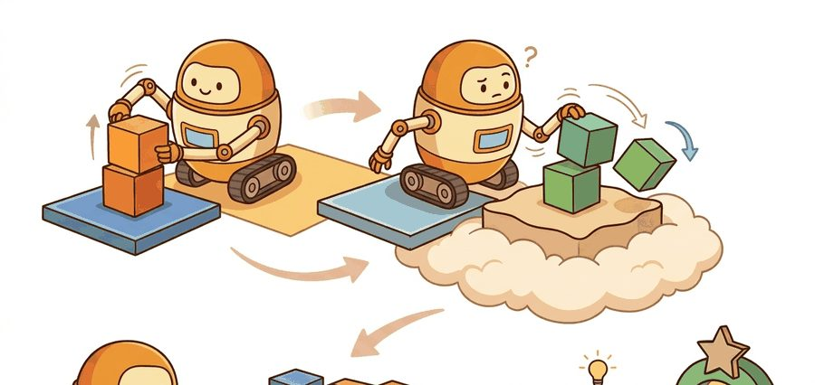
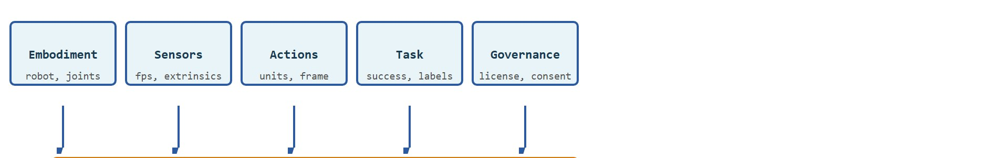

"The policy read the video. The researcher read the license. Only one of them was ready to ship."
A Dataset Card Lawyer

This section assumes familiarity with the datasets introduced in section 24.1 and with the distinction between commanded and executed actions from section 2.3. The embodiment metadata schema defined here is a direct prerequisite for cross-embodiment pooling in section 24.3, where incompatible schemas become the central obstacle. The scaling laws analyzed in section 24.4 also depend on clean split fields established in dataset cards of the type described below.
Imagine two teams pooling their manipulation datasets to train a shared policy. The columns look identical: "action_0" through "action_6". But one team recorded joint positions in radians, the other recorded end-effector deltas in meters. The policy trains, the loss drops, and the robot on deployment day moves three orders of magnitude too fast and destroys its gripper. Right now, as robotics scales from single-lab curiosity to thousand-robot fleets, the difference between a usable dataset and a dangerous one typically comes down to a few metadata fields being present or missing. This section identifies exactly which fields matter, why each one can silently break a policy, and how to write a dataset card that holds up as a legal and scientific contract.
A dataset without metadata is not a dataset; it is a pile of numbers waiting to destroy a robot. Figure 24.2A shows how the dataset card binds technical fields, embodiment metadata, splits, and licensing into one reproducible artifact that travels with the files.
At frame $t$ in episode $i$, a dataset row should identify $i$, $t$, observation features $o_{i,t}$, action features $a_{i,t}$, and metadata $m_i$. The metadata is not optional bookkeeping. Engineers call it the schema as scientific contract, and it defines whether two rows are comparable. One real mixing failure shows why. Two Franka datasets shared the same seven action columns: one recorded end-effector deltas in millimeters (typical value: 0.5), the other recorded joint torques in Newton-meters (typical value: 40). A schema check would have caught the clash, but the teams concatenated the columns directly. The policy trained without error and produced a falling loss curve. On hardware it then moved 80 times too fast and snapped the wrist joint on the first episode. The dataset card fields that would have blocked this mix took under two minutes to fill in.
Two datasets with identical action column names but different units, frames, or control modes are as comparable as two odometers where one measures miles and the other measures "however far the last driver usually went." The numbers line up; the meaning does not.
| Category | Required Fields | Failure If Missing |
|---|---|---|
| Embodiment | robot model, joints, gripper, base, control mode | Action labels cannot be interpreted. |
| Sensors | camera names, resolution, fps, extrinsics, proprioception | Observations cannot be aligned or reproduced. |
| Actions | units, frame, rate, saturation, command versus executed action | Policy output space is ambiguous. |
| Task | language, goal, reset, success, failure labels | Evaluation semantics drift. |
| Governance | license, consent constraints, redistribution rules | The dataset cannot be safely reused. |

Figure 24.2B traces how the five metadata categories feed a single validation gate that either passes the dataset for training or blocks it until the missing fields are resolved.
Before reading the validation algorithm, consider this: if two datasets share the same column names but different units, what is the earliest point in the pipeline where a software check could catch the mismatch? Your answer determines how much damage a bad mix can do before anyone notices.
Input: Candidate dataset $\mathcal{D}$ with card fields $\mathcal{C} = \{c_1, c_2, \ldots, c_k\}$; optional target dataset $\mathcal{D}'$ with card $\mathcal{C}'$ for compatibility checking; policy action head $\pi$ with output dimension $d_\pi$
Output: Validation verdict $v \in \{\text{pass}, \text{fail}\}$; compatibility flag $\phi \in \{0, 1\}$; list of blocking field gaps $\mathcal{G}$
Trace the validation algorithm with two concrete cards. Card A (BridgeData-style): control_mode = end_effector_delta, action_units = "m_rad", action_rate = 5 Hz, license = "MIT", success_threshold = 0.02 m. Card B (an RT-1 subset): control_mode = end_effector_delta, action_units = "m_rad", action_rate = 3 Hz, license = "research_only", success_threshold = 0.02 m. Step 1: all five categories present in both, so the gap list G stays empty. Step 3: both control modes read "end_effector_delta", a match. Step 7: action units match ("m_rad" = "m_rad") but rates differ (5 Hz vs 3 Hz), so compatibility flag phi is set to 0 and a rate mismatch is logged. Step 6: license "research_only" fails the SPDX lookup, so it is recorded in the source_licenses list L_s. Step 10: because phi = 0, the verdict is v = fail, even though G is empty. The two cards block at the rate field. Fix: resample Card B to 5 Hz (or relabel both at their native rates and let the loader subsample), re-run, and phi flips to 1, giving v = pass.
Action unit mismatches are silent at load time and catastrophic at training time. Consider a specific case: a Franka dataset records end-effector deltas in meters (typical range 0.001 to 0.05 per step), while a second dataset uses the same column name but records joint torques in Newton-meters (range 0.5 to 80). Concatenating both datasets produces a policy that receives mixed signals for the same output head. The training loss may still decrease because the model memorizes which episodes come from which distribution, but the policy fails on any real robot because the output scale is wrong by three orders of magnitude. The dataset card field "action_units" and "control_mode" exist precisely to catch this before mixing.
If robot type, action units, camera calibration, or split policy are outside the dataset, they will eventually be separated from the results that depend on them.
Each missing field in the table above has a specific failure mode that surfaces at a different stage of the pipeline. Missing camera extrinsics go unnoticed until a policy trained on one camera rig is deployed on a robot with a slightly different mount angle, at which point grasp positions are systematically offset. Missing action rate causes a policy trained at 10 Hz to be replayed at 30 Hz, tripling effective speed and making motions jerky or dangerous. Missing success labels mean evaluation metrics cannot be reproduced because each evaluator applies their own threshold. The right time to catch all three is when the dataset card is written, not when the policy fails on hardware.
LeRobotDataset v3 already provides conventions for multimodal time-series data, metadata, indexing, and Hub visualization. Use it after writing the dataset card, so the standard format implements a scientific contract rather than replacing one.
The lab below (Code Fragments 2 through 5) builds and validates a dataset card before training. The example uses plain Python so the logic is visible; in production, a Pydantic (a Python library that validates data against declared types at runtime) schema or LeRobot metadata validator would enforce the same contract.
Create a dataset card and validation rule for a small robot learning dataset.
pip install pydanticWrite a card model with robot, sensor, action, split, and license fields.
# Define a dataset card that makes embodiment and governance explicit.
from pydantic import BaseModel
class RobotDatasetCard(BaseModel):
robot: str
camera_fps: int
action_units: str
split_policy: str
license: str
def as_row(self) -> dict[str, object]:
return self.model_dump()
robot_dataset_card = RobotDatasetCard(
robot="mobile_manipulator",
camera_fps=30,
action_units="action_units_example",
split_policy="split_policy_example",
license="CC-BY-4.0"
)
print(robot_dataset_card.as_row())Create one card and print the normalized representation.
# Create one card and inspect its normalized dictionary.
card = RobotDatasetCard(
robot="franka",
camera_fps=30,
action_units="end_effector_delta_m_rad",
split_policy="held_out_scenes",
license="CC-BY-4.0",
)
print(card.model_dump())The lab should print a complete dataset-card dictionary and a short note explaining what kind of generalization the split tests.
Complete Solution
# Complete dataset-card solution with calibration metadata.
# This is enough structure for a small internal robot dataset.
from pydantic import BaseModel
class RobotDatasetCard(BaseModel):
robot: str
camera_fps: int
action_units: str
split_policy: str
license: str
calibration_version: str
def as_row(self) -> dict[str, object]:
return self.model_dump()
card = RobotDatasetCard(
robot="franka",
camera_fps=30,
action_units="end_effector_delta_m_rad",
split_policy="held_out_scenes",
license="CC-BY-4.0",
calibration_version="calib_2026_06_21",
)
print(card.as_row())The lab's license field looks like a single string to fill in and forget, but licensing is its own gate with its own failure modes, distinct from the schema checks above; the rest of this section works through why that gate deserves the same care as action units and camera extrinsics.
The schema fields above settle whether two datasets can be combined technically; the next set of fields settles whether they may be combined legally, which is a separate gate that fails just as silently.
License and redistribution terms must be known before a dataset is mixed with other data. Once derived checkpoints exist, separating incompatible sources can become impossible.
Think of a large robot dataset collection like a potluck dinner where each dish arrived in its own container with its own chef's rules: one says "help yourself," another says "ask before you share," and a third says "only at this table, not to go." The restaurant's menu board advertising "potluck night" does not override any individual chef's label. Using the umbrella collection license as though it covers every contributing dish is like eating the "not to go" casserole in a taxi: the menu board said nothing about it, but the container's label was always the binding rule.
A collection-level license rarely applies uniformly to every sub-dataset it contains; the CC-BY-4.0 header on the Open X-Embodiment Hugging Face page is the classic trap. These collections aggregate contributions from many labs, and each contributing dataset carries its own license: research-only, non-commercial, or bound by consent constraints on recorded operators. The umbrella page describes a distribution format, not a single legal grant. Curators must audit each sub-dataset, record its license in the card's "source_licenses" field, and propagate any restrictive term to every downstream checkpoint or product trained on it.
So far: licensing must be settled before mixing because separating sources afterward can be impossible, a collection-level license is not a single grant but a bundle of per-dataset terms, and the Open X-Embodiment umbrella page is a distribution format, not a legal contract covering every contributor. The next callouts show how to audit those per-source terms in practice.
When pulling subsets from Open X-Embodiment via RLDS (Robot Learning Dataset, Google's episodic dataset format) or the tensorflow_datasets loader, check the per-dataset dataset_metadata.json field "license" for every individual dataset name, not just the umbrella collection page: several contributors (including some RT-1 subsets) carry non-commercial or research-only restrictions that differ from the CC-BY-4.0 header shown on the OXE Hugging Face card. A fast audit is to run grep -r '"license"' ~/.cache/tensorflow_datasets/open_x_embodiment/ after the first download and collect unique values before any mixing. Record each per-source license in your dataset card's "source_licenses" list field so downstream checkpoint releases can be checked against it automatically.
BridgeData V2 (Walke et al., 2023) ships under MIT, but several Open X-Embodiment contributors pooled beside it (for example RoboTurk and parts of the RT-1 collection) carry research-only or non-commercial terms. A team fine-tuning a single Octo or OpenVLA checkpoint on the mixed pool inherits the most restrictive term in the mix: that checkpoint cannot legally ship in a commercial product even though the BridgeData portion alone could. A dataset card that records a separate license for the raw WidowX videos, the derived image features, and the right to train and redistribute a checkpoint catches this before the gradients ever touch a restricted episode.
Concretely, this means the RobotDatasetCard object built in the lab above should carry a source_licenses list field alongside its single license string whenever the card describes a pooled collection rather than one dataset with one license: the top-level license records the umbrella grant, and source_licenses records the per-contributor terms that actually govern redistribution.
Executable dataset contracts and automated schema enforcement (2024-2025). Moving beyond prose dataset cards toward machine-readable schemas that block incompatible data mixing at load time. The DROID dataset (Khazatsky et al., 2024, Stanford and Berkeley) demonstrated per-scene calibration manifests that let loaders reject episodes with drifted wrist-camera extrinsics before training begins. LeRobotDataset v3 (Hugging Face Robotics, 2024) extended this to versioned metadata JSON that downstream trainers can parse programmatically, turning the card from a PDF into an enforced contract.
Consent-aware and privacy-preserving dataset governance (2024-2026). Large-scale teleoperation collections inevitably record human operators, raising consent and re-identification questions absent from earlier lab datasets. The Open-TeleVision framework (2024, MIT CSAIL) and related work on whole-body imitation bring operator faces and body poses into the dataset, forcing new metadata fields for consent scope and data-subject withdrawal rights. Active work in the robotics data community is designing dataset card extensions that record consent granularity per episode, enabling selective deletion of revoked episodes without retraining from scratch.
Federated and on-device dataset assembly (2025-2026). Rather than shipping raw trajectories to a central server, several industry labs (including Google DeepMind's fleet-learning program and Physical Intelligence's pi0 data pipeline) are piloting approaches where robots log episodes locally, schema-validate them on device, and upload only episodes that pass a card compatibility check. This shifts the metadata enforcement problem from a curator's laptop to the robot itself, making the dataset card a real-time quality gate rather than a post-hoc annotation.
Open problem for PhD students. No publicly available tool can automatically infer a dataset's control mode, action units, and frame convention from the raw trajectory statistics alone, without relying on self-reported metadata fields that curators often leave blank. A reliable statistical fingerprinting method that detects "these action columns are joint torques in Nm, not end-effector deltas in m" from value distributions, temporal autocorrelation, and co-variation with proprioceptive readings would eliminate the most common silent mixing failure in cross-embodiment training and could serve as an automated auditor for Open X-Embodiment sub-datasets that currently have incomplete cards.
The DROID dataset (Khazatsky et al., 2024) bakes embodiment metadata directly into its release: every one of its 76,000 trajectories ships with a per-scene calibration manifest recording wrist- and third-person-camera extrinsics, so a loader can reject episodes whose camera geometry drifted before any frame reaches the policy. This is the dataset card as an enforced contract rather than a prose afterthought, and it is why DROID episodes can be pooled across 18 labs and 13 institutions without the silent extrinsics mismatches that plague ad hoc collections.
A robot that memorizes scene geometry rather than learning a transferable grasp strategy fails the moment the table moves or the lighting changes. Re-collecting robot data is slow and expensive, so a split policy becomes the only mechanism that forces honest measurement of generalization before deployment. A randomly shuffled held-out set lets test episodes share the same table, lighting, and object positions as training episodes, and reporting accuracy on it produces inflated numbers that predict nothing about real-world performance. One manipulation study makes the cost concrete. A policy appeared to need 50,000 episodes to saturate a random split, yet it needed only 300 once the split held out novel scenes, because the earlier data-scaling curve measured scene memorization, not grasping skill.
The split policy field works by recording which factor was held out: held-out objects, held-out scenes, held-out operators, or held-out tasks. At evaluation time, any script loading the dataset reads this field and routes episodes accordingly, preventing a test episode that shares a background with a training episode from contaminating the generalization score.
Could a new lab reproduce your dataset split and action units from the card alone? If not, the card is a brochure rather than a scientific artifact.
A robot dataset is reusable only when its schema, embodiment metadata, split policy, and license are explicit enough to travel with the files.
Draft a dataset card for a bimanual manipulation dataset and include one field that would prevent an invalid comparison.
Dataset card validator (beginner, weekend): Build a Python CLI using Pydantic that reads a LeRobot dataset_metadata.json file and checks all five required card categories (embodiment, sensors, actions, task, governance), printing a pass/fail report with specific missing fields. The key challenge is writing regex rules that distinguish valid SPDX license identifiers from free-text strings like "research only" that slip through without explicit validation.
Unit-mismatch detector for dataset mixing (intermediate, 1-2 weeks): Extend LeRobot's dataset loader to run the compatibility check from Algorithm 24.2 automatically when two datasets are concatenated, raising a typed exception that names the conflicting fields before any training loop sees the mixed batch. The key challenge is parsing the action unit string reliably across the inconsistent naming conventions found in Open X-Embodiment sub-datasets (some use "m", others "meters", others leave the field blank) without hard-coding every variant.
Split-policy auditor with MuJoCo replay (intermediate, 1-2 weeks): Write a tool that loads a dataset card's split_policy field, replays held-out episodes in MuJoCo or PyBullet using the recorded joint states, and flags any episode whose background geometry appears in the training split, exposing scene-memorization leakage before evaluation metrics are reported. The key challenge is computing a lightweight scene fingerprint from proprioceptive and camera data alone, without access to ground-truth scene IDs that most datasets do not provide.
Section 24.3 studies the hardest schema problem: pooling data across different embodiments without pretending all action spaces are the same.
Khazatsky, A. et al. (2024). DROID: A Large-Scale In-The-Wild Robot Manipulation Dataset.
Provides an in-the-wild manipulation dataset with diverse scenes, collectors, tasks, and detailed hardware reproduction guidance.
The central reference for cross-embodiment robot data, standardized dataset release, and RT-X style transfer across robot bodies.
Walke, H. R. et al. (2023). BridgeData V2: A Dataset for Robot Learning at Scale.
A large manipulation dataset designed around open-vocabulary multi-task learning, goal images, language, and data-scale experiments.
Google DeepMind Open X-Embodiment Repository.
Shows the released dataset structure and RLDS episode organization used by the Open X-Embodiment ecosystem.
LeRobotDataset v3.0 Documentation.
The practical reference for standardized multimodal robot time-series data, metadata, indexing, and Hub visualization.